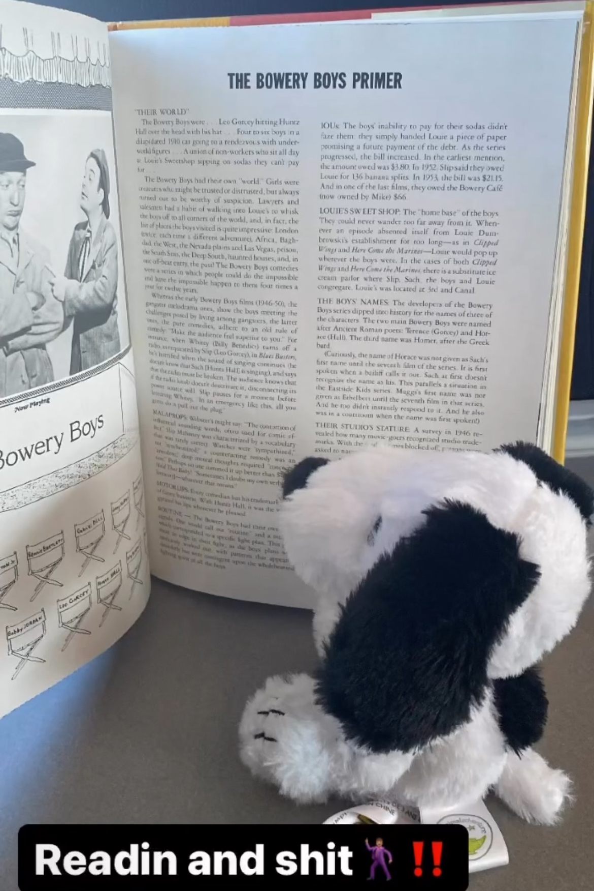
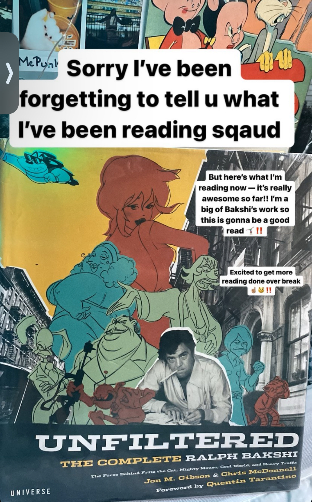

Jaz
She realized that she loved telling stories when imaging characters. The earliest Jaz told her stories, she was really little telling her stories to someone else, then they would have complex stories to narrate while they played with dolls.
Creating elaborate stories while she played with dolls with family members, originally her cousin would lead the stories until she got older and then Jaz had to step up to the plate narrating stories for her younger relatives who would also play with her.

Always loved reading, and hearing story times from her family. Always encouraging others around her family, no matter the age, to get their library card.
Jaz loved many books when she was younger including Fancy Nancy, old rascal shorts, the older looney toons which would inspire her sillier stories. Also inspired by reality shows like Tia Tamera, Julian and Bill. Acting out the scenes from the shows.
Writing more personal essays, writing more fictional stories with worldbuilding and plots to develop her characters. Her dialogue is heavily inspired by the old Hollywood shows she loves, delighting her professors with the quick dialogue and catchphrases that were stables from that time. Those that read her work report how her work is so happy and delightful to read.

Reading Toni Morrison and more authors have helped her writing skills and get stronger as a writer. Learning to balance her time to write, balancing school and her writing of personal essays, fiction and short stories. Lastly of course choosing Dean Martin and Dorothy Dandridge to have a nice meal with out of any classic stars.